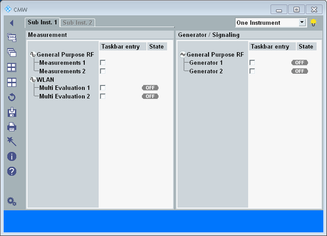

The multiple-window mode can only be used on external monitors, not on built-in instrument displays. To enable or disable the mode, see "Multiple Window".
If the multiple-window mode is enabled, the following main window is displayed after the startup.

This main window serves as control center in multiple-window mode. From here, you can open additional windows, for example a measurement window, a generator window, a window showing the setup dialog or the help system.
You can keep all these windows open in parallel. You can for example modify generator settings in one window and at the same time monitor measurement results in a second window. Or you can keep the help window open while configuring settings.
Freely arrange the windows on your monitor and resize windows as desired. The position and the size of the windows is remembered and restored after a restart or after switching between subinstruments.
There is at least one subinstrument tab. If your instrument can be split into subinstruments, there is one tab per possible subinstrument (depends on the instrument model and the installed options).
Each tab lists the firmware applications assigned to the subinstrument. Select a subinstrument tab to display all open windows related to that subinstrument.
To configure the split of the instrument into subinstruments, use the setting on the upper right ("One Instrument", "Two Sub Instruments", ...).
See also "Instrument Setup Dialog".
For manual control of firmware applications, you must enable the applications in the main window. For each enabled application, an entry is added to the task bar at the bottom and a new window with the application is opened.
Remote control of a firmware application is possible without enabling it in the main window.
The list of available firmware applications in the main window is dynamic. It depends on your installed software packets, the available licenses and the available hardware.